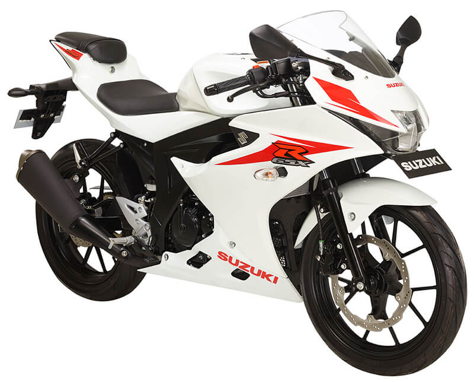
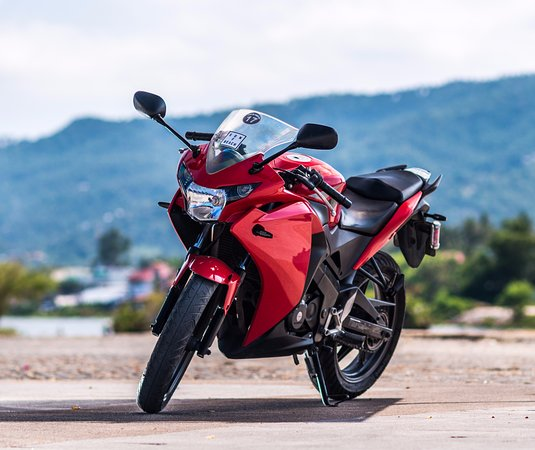
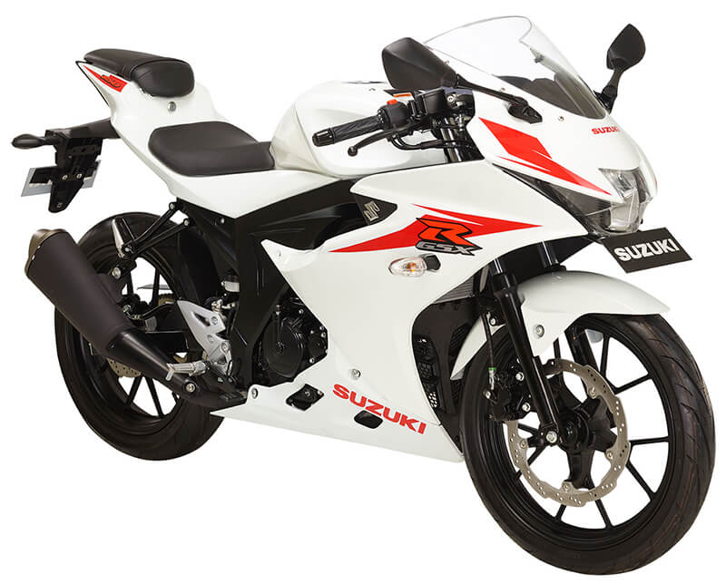
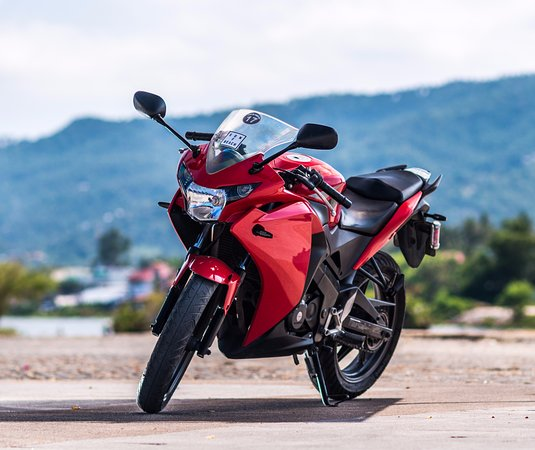

R15: Yamaha YZF R15 V3 is powered by 155 cc engine.This R15 V3 engine generates a power of 18.6 PS @ 10000 rpm and a torque of 14.1 Nm @ 8500 rpm. Yamaha YZF R15 V3 gets Disc brakes in the front and rear. The kerb weight of R15 V3 is 142 Kg. Yamaha YZF R15 V3 has Tubeless Tyre and Alloy Wheels.
GSXR: Suzuki GSX-R150 was recently unveiled in Indonesia and it marks the comeback of a valuable brand in the most selling segment of bikes around the Asian countries. It uses a fuel injected, water cooled motor and weighs just 126 kg, without fluids. The aerodynamic design is shared with the GSX-R125 and seems fully inspired from the liter class GSX-R1000. GSX-R150 may take some time for its Indian market entry while offers 5 mouth watering shades in Indonesian market. GSX-R150 generates maximum power of 18.90 Bhp @ 10,500 rpm and maximum torque of 14 NM @ 9000 rpm. The sport bike uses LED headlight, key-less ignition system and digital instrument console as its key features. If launched in India, GSX-R150 would be competing with the likes of Yamaha R15 and Honda CBR150R.
CBR: Honda CBR 150R is regarded as one of the two top sports bike in Bangladesh which is manufactured by great Honda company. With highest 18.28 Bhp among rest available bike in Bangladesh but comparatively lower torque of 12.66 Nm, the bike can easily cross 140 km per hour top speed. In Bangladesh, Yamaha R15 V2.0 and recently released Suzuki GSX 150R are regarded as the top rivals of CBR 150R.
 R15

GSXR

CBR
R15

GSXR

CBR